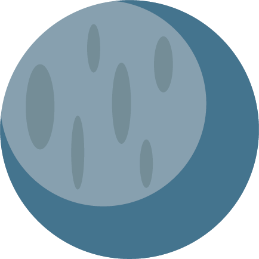

Earth
Earth is the third planet from the Sun and the only astronomical object known to harbor life . According to radiometric dating and other evidence, Earth formed over 4.5 billion years ago.

Mars
Mars is the fourth planet from the Sun and the second-smallest planet in the Solar System after Mercury. In English, Mars carries a name of the Roman god of war and is often referred to as the 'Red Planet'.
Jupiter
The planet Jupiter is the fifth planet out from the Sun, and is two and a half times more massive than all the other planets in the solar system combined. It is made primarily of gases and is therefore known as a “gas giant”.
Saturn
Saturn is the sixth planet from the Sun and the second-largest in the Solar System, after Jupiter. It is a gas giant with an average radius of about nine times that of Earth. It only has one-eighth the average density of Earth; however, with its larger volume, Saturn is over 95 times more massive.
Mercury
Mercury is the smallest and innermost planet in the Solar System. Its orbit around the Sun takes 87.97 days, the shortest of all the planets in the Solar System. It is named after the Roman deity Mercury, the messenger of the gods.
Venus
Venus is the second planet from the Sun. It is named after the Roman goddess of love and beauty. As the second-brightest natural object in the night sky after the Moon, Venus can cast shadows and, rarely, is visible to the naked eye in broad daylight.
Pluto
Pluto is the second closest dwarf planet to the Sun and was at one point classified as the ninth planet. Pluto is the largest dwarf planet but only the second most massive, with Eris being the most massive.
Uranus
Uranus is the seventh planet from the Sun in the Solar System. It is a gas giant. ... The planet is tilted on its axis so much that it is sideways. It has five big moons, many small ones, and a small system of 13 planetary rings.

Neptun
Neptune is the eighth and farthest known planet from the Sun in the Solar System. In the Solar System, it is the fourth-largest planet by diameter, the third-most-massive planet, and the densest giant planet. Neptune is 17 times the mass of Earth, slightly more massive than its near-twin Uranus.
- 